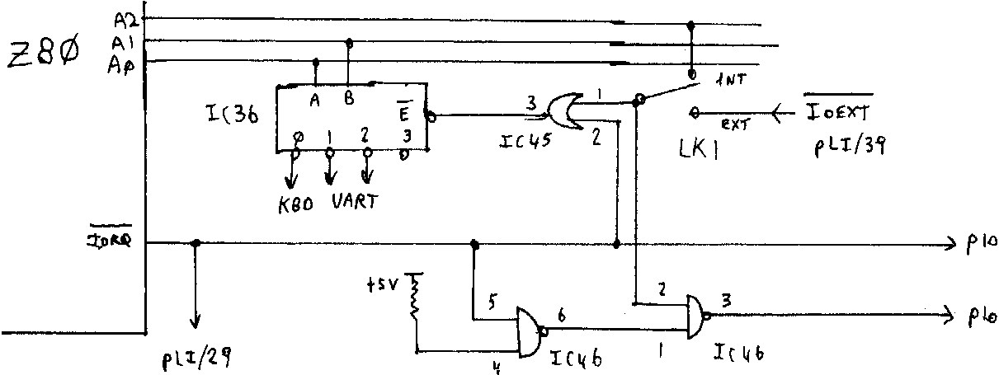
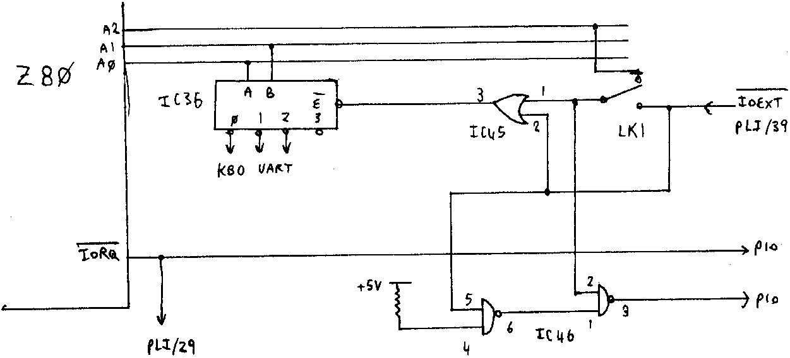

INMC 80 News |
February–April 1981 · Issue 3 |
| Page 14 of 55 |
|---|
Dear INMC
I recently completed a new IO extension board for my Nascom 1, this included a CUTS cassette interface, a sound effects generator chip and some TTL ports for a joystick, keyboard and an IBM printer (my PIO is used to provide real time interupts from the video blanking logic). On testing the board by reading and writing to the new ports I got conflicts with more than one device attempting to put data on the bus at the same time. Naturally I suspected that I had either designed or wired up the port decoding wrongly, but I could find no errors on my board.
I decided to look at the Nascom 1 circuit again to check that I was providing the correct IOEXT signal, and here I discovered the cause of the problem, below is a simplified version of the Nascom 1 IO decoding:
As can be seen on internal port decoding, if A2 is lo then the keyboard and UART ports are selected while A2 hi selects the PIO. Unfortunatly on external IO decoding IOEXT has the same effect as A2 had, so that there is no way of turning off the Nascom 1 ports. Fortunatly the circuit can be corrected with the existing gates, to the following:
| Page 14 of 55 |
|---|